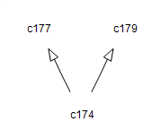

com.octo.captcha.service.sound
Class DefaultManageableSoundCaptchaService

java.lang.Object
 com.octo.captcha.service.AbstractCaptchaService
com.octo.captcha.service.AbstractManageableCaptchaService
com.octo.captcha.service.sound.AbstractManageableSoundCaptchaService
com.octo.captcha.service.sound.DefaultManageableSoundCaptchaService
com.octo.captcha.service.AbstractCaptchaService
com.octo.captcha.service.AbstractManageableCaptchaService
com.octo.captcha.service.sound.AbstractManageableSoundCaptchaService
com.octo.captcha.service.sound.DefaultManageableSoundCaptchaService
- All Implemented Interfaces:
- AbstractManageableCaptchaServiceMBean, CaptchaService, ManageableCaptchaService, SoundCaptchaService
public class DefaultManageableSoundCaptchaService
- extends AbstractManageableSoundCaptchaService
- implements SoundCaptchaService
Default service implementation : use a FastHashMapCaptchaStore as captcha store, and a SpellerSoundCaptchaEngine
It is initialized
with thoses default values : - min guaranted delay : 180s
- max store size : 100000 captchas
- max store size before garbage collection : 75000
- Version:
- $Id: DefaultManageableSoundCaptchaService.java 466 2007-12-27 09:38:03Z antoineveret $
- Author:
- Marc-Antoine Garrigue
| Methods inherited from class com.octo.captcha.service.AbstractManageableCaptchaService |
emptyCaptchaStore, garbageCollectCaptchaStore, garbageCollectCaptchaStore, generateAndStoreCaptcha, getCaptchaEngineClass, getCaptchaStoreMaxSize, getCaptchaStoreSize, getCaptchaStoreSizeBeforeGarbageCollection, getEngine, getMinGuarantedStorageDelayInSeconds, getNumberOfCorrectResponses, getNumberOfGarbageCollectableCaptchas, getNumberOfGarbageCollectedCaptcha, getNumberOfGeneratedCaptchas, getNumberOfUncorrectResponses, isCaptchaStoreFull, isCaptchaStoreQuotaReached, setCaptchaEngine, setCaptchaEngineClass, setCaptchaStoreMaxSize, setCaptchaStoreSizeBeforeGarbageCollection, setMinGuarantedStorageDelayInSeconds, validateResponseForID |
| Methods inherited from class java.lang.Object |
clone, equals, finalize, getClass, hashCode, notify, notifyAll, toString, wait, wait, wait |
DefaultManageableSoundCaptchaService
public DefaultManageableSoundCaptchaService(int minGuarantedStorageDelayInSeconds,
int maxCaptchaStoreSize,
int captchaStoreLoadBeforeGarbageCollection)
- Construct a new SoundCaptchaService with a
FastHashMapCaptchaStore and a SpellerSoundCaptchaEngine
- Parameters:
minGuarantedStorageDelayInSeconds - maxCaptchaStoreSize - captchaStoreLoadBeforeGarbageCollection -
DefaultManageableSoundCaptchaService
public DefaultManageableSoundCaptchaService()
- Construct a new SoundCaptchaService with a
FastHashMapCaptchaStore and a SpellerSoundCaptchaEngine
minGuarantedStorageDelayInSeconds 180s
maxCaptchaStoreSize 100000
captchaStoreLoadBeforeGarbageCollection 75000
DefaultManageableSoundCaptchaService
public DefaultManageableSoundCaptchaService(CaptchaStore captchaStore,
CaptchaEngine captchaEngine,
int minGuarantedStorageDelayInSeconds,
int maxCaptchaStoreSize,
int captchaStoreLoadBeforeGarbageCollection)
Copyright © 2003-2009 JCaptcha corp.. All Rights Reserved.